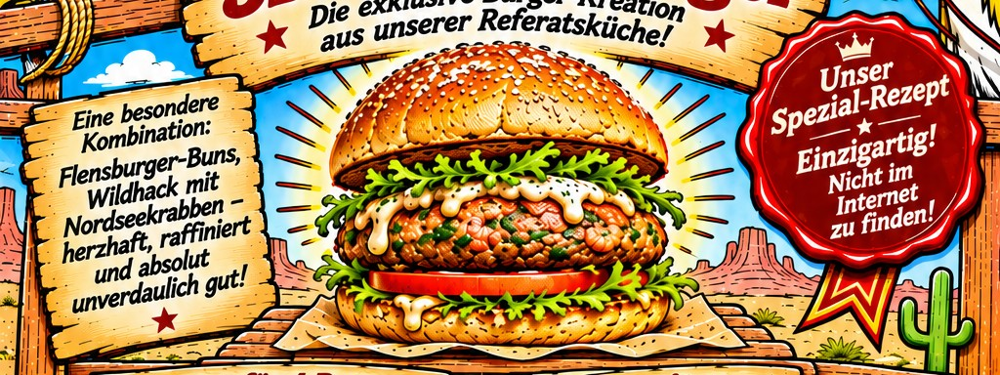
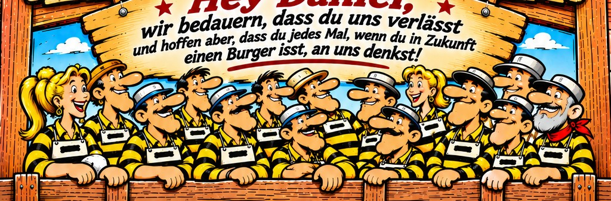

3D – D.M. – Burger
Eine außergewöhnliche Kombination aus Flensburger-Buns, Wildhack und Nordseekrabben!

Zutaten
Flensburger-Buns
- 500 g Roggenmehl Type 1150
- 1 Würfel Frischhefe
- 1 Flasche Flensburger Pilsener (0,33 l)
- 3 EL Honig
- 1 gestrichener TL Salz
- gehackte Sonnenblumenkerne
- Gewürz nach Belieben, z. B. Wildgewürz oder gemahlener Kümmel
Patties
- 500 g gemischtes Wildhack
- 250 g Nordseekrabben
- 1 Zwiebel
- 1 Ei
- 2 EL Semmelbrösel
- Salz, Pfeffer
Soßen
- 100 ml Ketchup
- 3 EL gehackte Rote Bete
- 100 ml Mayonnaise
- 3 EL gehackte Gewürzgurken
Belag
- Tomaten
- grüner Salat
Zubereitung
Für die Buns
Eine Tasse Bier mit der hineingebröckelten Hefe, dem Honig und den gewünschten Gewürzen mischen.
Wer in der Outdoorküche keine frische Hefe zur Hand hat, kann auch Trockenhefe verwenden. Die Mischung dann auf lauwarme Temperatur bringen – nur handwarm, nicht zu heiß.
In einer Schüssel gibt man das Mehl, das Salz sowie die Sonnenblumenkerne, vermischt das Ganze und knetet daraus mit der Mischung aus der Tasse und dem restlichen Bier einen Teig. Dieser muss nun mehrere Stunden gehen.
Dann vom Teig kleine Stücke abteilen, Buns formen und sie nebeneinander auf den Boden des Dutch Ovens legen. Dadurch ergeben sie beim Aufbacken einen Kranz aus Brötchen, die sich per Hand auseinanderbrechen lassen.
Die Buns noch einmal eine Stunde ruhen lassen. Derweil genug Kohlen vorbereiten, die den Dutch Oven etwa auf 180 °C bringen. Die Buns für etwa 40 Minuten backen. Wenn sie beim Klopfen hohl klingen, sind sie fertig.
Für die Patties und die Soßen
Das Hackfleisch wird ganz klassisch mit Salz und Pfeffer gewürzt und mit Zwiebeln, Ei und Semmelbröseln verknetet. Die Nordseekrabben werden grob gehackt in das Innere der Patties eingebaut.
Während die Patties auf dem Grill garen, mischen wir für die Burger eine ganz spezielle rote und weiße Soße. Die rote besteht aus Roter Bete mit Ketchup, die weiße aus Mayonnaise mit ganz fein gehackten Gewürzgurken. Dazu noch ein Blättchen grünen Salat und ein paar Scheiben Tomate fürs Auge: et voilà!
Rezeptvorlage: Waterkant BBQ, Wilde Hunde 1/2017. Hier als persönliche Geschenkseite neu gesetzt.
Hey Daniel!
Wir bedauern, dass du uns verlässt, und hoffen, dass du jedes Mal, wenn du in Zukunft einen Burger isst, an uns denkst!
Deine 14 Kollegen aus dem Referat für „Unverdauliches“
